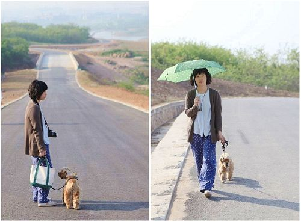

意外出场的主角 @ May 02, 2010
以为会是精力充沛的Zakky一起来登山，然而出现的是外外。
它在楼下小解后上了问问的车，再如何，也不愿离开。
于是，它成了登山的主角。
只有它一只狗狗，人再多也不稀奇，哼。
有人问：“对宠物的情感有时真让人难以理解，它们会占用主人很多时间？”有时，我自己也难以理解，喜欢何须原因。外外既高兴又努力地行走着，还有鼓励的眼神时刻伴随它~

山里的空气合着满目葱翠，时不时会引起外外的兴趣，它驻足，观望。是不是胸中也会泛起“心旷神怡”？

外外：“我需要一副糖果色复古的太阳眼镜。”

阿姨给你画一副哦~
山口设了关卡，车不再能开上山了。
不得不......步行经过这段本可以开车忽略而过的新路。
路再好，也是上坡，也要挥汗。

这块被缝纫后的圆点全棉花布，被问问用来做“相机包”。

摄影杂志上有句印象深刻的文字：用相机留住她的容颜。
8 Responses to “意外出场的主角”
2010-05-02
选的两张和我一样。哈哈。
相机太温柔，每每看到这色彩光晕，心就动。
2010-05-02
多出去走走，就会有心动的感觉。
用你的话讲：万物皆有灵，且美。
2010-05-02
哈哈，残腿主角。
2010-05-02
果然值得一去哦~···
2010-05-02
不是我做的相机包，是达人小原子的手艺呕！
2010-05-03
给外整的眼镜好酷啊,抢眼~
2010-05-05
问问撑着伞带狗走的那张, 我最喜欢
2010-05-05
大图细节更好，我也是喜欢第一张。
Leave A Reply
存档只读，评论已关闭。